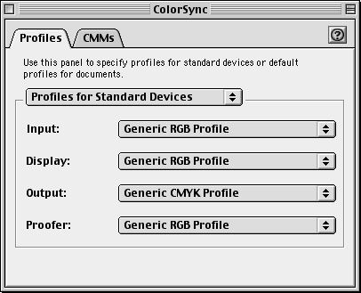
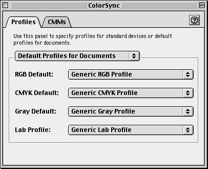

|
|
This Technote describes the APIs your application can use to take advantage of new features available in ColorSync 3.0.
Updated: [Oct 5 1999]
|
System Requirements
ColorSync 3.0 requires a PowerPC computer running Mac OS 8.5 or later.
Back to top
Checking for ColorSync 3.0
To determine if the ColorSync Manager shared libraries have been loaded on a PowerPC machine, use the Gestalt function with the gestaltColorMatchingAttr selector. Test the bit field (bit 1)
indicated by the gestaltColorMatchingLibLoaded constant in the response parameter. If the bit is set, the ColorSync Manager shared libraries are loaded. The following code snippet shows how this is done. This code snippet initializes the ColorSyncAvailable Boolean variable to false.
Boolean CheckIfColorSyncAvailableOnPPC (void)
{
Boolean ColorSyncAvailable = false;
long gestaltResponse;
if (Gestalt(gestaltColorMatchingAttr, &gestaltResponse) == noErr)
{
ColorSyncAvailable = gestaltResponse & (1 << gestaltColorMatchingLibLoaded);
}
return ColorSyncAvailable;
}
|
Alternately, you can use the ColorSync function CMGetColorSyncVersion (see Technote 1160, "What's New With ColorSync 2.6" for the details) to check for the presence of ColorSync.
The CMGetColorSyncVersion function also returns the ColorSync version information. Here's a code snippet that checks for ColorSync version 3.0:
#define kColorSync3 0x00000300
CMError err;
UInt32 version;
err = CMGetColorSyncVersion(&version);
if (err == noErr)
{
if (version >= kColorSync3)
{
/* ColorSync 3 is installed */
}
}
else
{
/* ColorSync not present */
}
|
Back to top
Getting ColorSync 3.0 Version Information
As described in the section above, use the ColorSync CMGetColorSyncVersion function to get ColorSync version information.
Alternately, you can use the Gestalt function with the gestaltColorMatchingVersion selector to get ColorSync version information.
You can modify and use the following sample code to test for version 3.0 of the ColorSync Manager. This function initializes the Boolean variable ColorSyncAvailable to false and sets it to true if version 3.0 or later of the ColorSync Manager is installed.
#define kColorSync3 0x00000300
Boolean CheckForColorSyncVersion3(void)
{
Boolean ColorSyncAvailable = false;
long version;
if (Gestalt(gestaltColorMatchingVersion, &version) == noErr)
{
if (version >= kColorSync3)
{
ColorSyncAvailable = true;
}
}
return ColorSyncAvailable;
}
|
Back to top
Taking Advantage of System-Wide Color Management Settings
The ColorSync 3.0 Control Panel, together with the new programming API described in this document, provides a consistent interface to system-wide color management settings. By taking advantage of this interface, you can improve the color management experience for users at all levels, while spending less time creating your own interface for user color preferences.
Before ColorSync 3.0, many novice users were either unaware of ColorSync or didn't know how to use it. Color professionals used ColorSync to solve many of their basic color management problems, but had to exercise more manual control than was really necessary. Without a system-wide interface, each application had to present its own UI for selecting device profiles, rendering intents, and so on. In addition, there was no consistent interface for attaching or assigning color profiles to scanned or printed data.
The ColorSync 3.0 control panel, shown in the following sections and described in detail in "About ColorSync 3.0" (which is distributed with ColorSync 3.0), provides users with a higher level of control over the entire color management process, including the ability to:
- set default profiles for input, display, output, and proofing devices
- set default profiles for document color spaces, including RGB, CMYK, Gray, and Lab (and you can programmatically set a default profile for XYZ space)
- select a preferred CMM
- save these color settings in named "workflows" and switch between them
ColorSync's default settings provide useful color control for novices, while professionals can easily assign profiles for specific devices or images, save settings, and switch between them as they work on different projects. In addition, the ColorSync control panel is now implemented as an application, which other applications can launch with the CMLaunchControlPanel function.
The following sections describe the API you can use to access ColorSync's new features.
Back to top
Working With Profiles for Standard Devices
Starting with ColorSync 3.0, users can specify their preferences for system-wide profiles for input, output, display, and proof devices with the ColorSync control panel. The following illustration shows the default settings for the device profiles. Users can change these settings individually or by changing to a new workflow (which specifies device profiles, document profiles, and preferred CMM). Workflows are described in detail in "About ColorSync 3.0."

Figure 1 - Profiles for Standard Devices
Your application can obtain the user's preferred device profile settings with the CMGetDefaultProfileByUse function. You can also set values for device profiles with the CMSetDefaultProfileByUse function. When you call one of these functions, you use a constant from the following enum to specify which type of device profile to get or set.
enum {
cmInputUse = 'inpt',
cmOutputUse = 'outp',
cmDisplayUse = 'dply',
cmProofUse = 'pruf'
};
|
cmInputUse | Specifies the preferred input device profile. |
cmOutputUse | Specifies the preferred output device profile. |
cmDisplayUse | Specifies the preferred display device profile. |
cmProofUse | Specifies the preferred proofing device profile. |
The CMGetDefaultProfileByUse function is available starting with ColorSync version 3.0. It is defined as follows:
pascal CMError CMGetDefaultProfileByUse (
OSType use,
CMProfileRef * prof);
|
use - A value of type OSType. You pass one of the constants described above to specify the device type for which to
obtain the profile.
prof - A pointer to a profile reference of type CMProfileRef (described in "Managing Color With ColorSync"). On return, the reference refers to the profile for the device specified by use. When your application has finished using this reference, it must close the reference by calling the function CMCloseProfile.
function result - A result code of type CMError. For possible values, see "Managing Color With ColorSync."
The CMSetDefaultProfileByUse function is also available starting with ColorSync version 3.0. It is defined as follows:
pascal CMError CMSetDefaultProfileByUse (
OSType use,
CMProfileRef prof);
|
use - A value of type OSType. You pass one of the constants described above to specify the device type for which to
set the profile.
prof - A profile reference of type CMProfileRef (described in "Managing Color With ColorSync"). ColorSync sets the profile for the device specified by the use parameter to the profile specified by this reference.
function result - A result code of type CMError. For possible values, see "Managing Color With ColorSync."
Back to top
Working With Default Profiles for Documents
With ColorSync 3.0, users can specify default document profiles for RGB,
CMYK, Gray, and Lab color spaces with the ColorSync control panel. (Previous ColorSync versions could only set profiles for RGB and CMYK spaces.) Your application can use these profiles both when opening files and when creating new files. For example, if a document contains an RGB image that doesn't have an embedded profile, you might use the RGB default document profile.
Similarly, when a user creates a new RBG document, you can create the
image in the color space of the same RGB default profile, or perhaps of the display device profile.
The following illustration shows the default settings for the document color space profiles. Users can change these settings individually, or by changing to a new workflow (which specifies device profiles, document profiles, and preferred CMM). Workflows are described in detail in "About ColorSync 3.0."

Figure 2 - Default Profiles
Your application can get and set default document profiles for various color spaces using the functions CMGetDefaultProfileBySpace and CMSetDefaultProfileBySpace. To specify a color space to get or set the default profile for, you use one of the following constants. Note that a user cannot set a default profile for XYZ space, but you can do so in your application.
enum {
cmXYZData = 'XYZ ',
cmLabData = 'Lab ',
cmRGBData = 'RGB ',
cmGrayData = 'GRAY',
cmCMYKData = 'CMYK'
};
|
cmXYZData | Specifies XYZ space. |
cmLabData | Specifies LAB space. |
cmRGBData | Specifies RGB space. |
cmGrayData | Specifies Gray space. |
cmCMYKData | Specifies CMYK space. |
The CMGetDefaultProfileBySpace function is defined as follows:
pascal CMError CMGetDefaultProfileBySpace (
OSType dataColorSpace,
CMProfileRef * prof);
|
dataColorSpace - A value of type OSType. You pass one of the constants described above to specify the color space for which to obtain the default document profile. Prior to ColorSync 3.0, there was no default for Gray color space.
prof - A pointer to a profile reference of type
CMProfileRef (described in "Managing Color With
ColorSync"). On return, the reference refers to the
default document profile for the color space
specified by dataColorSpace. When your application
has finished using this reference, it must close the
reference by calling the function CMCloseProfile.
function result - A result code of type CMError. For possible values, see "Managing Color With ColorSync."
The CMSetDefaultProfileBySpace function is defined as follows:
pascal CMError CMSetDefaultProfileBySpace (
OSType dataColorSpace,
CMProfileRef prof);
|
dataColorSpace - A value of type OSType. You pass one of the constants described above to specify the color
space for which to set the default document profile. Prior to ColorSync 3.0, there was no default for Gray color space.
prof - A profile reference of type CMProfileRef (described in "Managing Color With ColorSync"). ColorSync sets the default document profile for the color space specified by dataColorSpace to the profile specifiedby this reference.
function result - A result code of type CMError. For possible values, see "Managing Color With ColorSync."
Getting the Preferred CMM
Starting with ColorSync 2.5, a user can set a preferred CMM with the
ColorSync control panel and your application can obtain the preferred CMM by calling the CMGetPreferredCMM function, which is defined as follows:
pascal CMError CMGetPreferredCMM (
OSType * cmmType,
Boolean * preferredCMMnotfound);
|
cmmType - A pointer to an OSType. On return, the component subtype for the preferred CMM. For example, the
subtype for ColorSync's default CMM is 'appl' and
the subtype for the Kodak CMM is 'KCMS'. A return
value of NU
preferredCMMnotfound - A pointer to a Boolean flag for whether the preferred CMM was not found. On return, has the value true if the CMM was not found, false if it was
found.
function result - A result code of type CMError. For possible values,see "Managing Color With ColorSync."
Back to top
Launching the ColorSync Control Panel From Your Application
|
Note:
The CMLaunchControlPanel routine described in this section does not work properly in ColorSync 3.0. It will be fixed in the next release of ColorSync.
|
With ColorSync 3.0, your application can launch the ColorSync control panel to solicit color choices, including default profiles for devices and documents, as well as preferred CMM. Users can also switch between named collections of color settings called workflows (described in detail in "About ColorSync 3.0").
Many applications have made the decision to take responsibility for color management preferences as part of their user interface (UI). Now, with the ability to launch the ColorSync control panel from within an application, perhaps some or all of that extra UI and code can be eliminated, and users can be exposed to a standard color management UI, provided by ColorSync.
To launch the ColorSync control panel from your application, you call the following function:
pascal CMError CMLaunchControlPanel (UInt32 flags);
|
flags - You must pass a value of 0 for this parameter. Future versions of ColorSync may define constants for the flags
parameter to specify how the ColorSync control panel is
launched.
function result - A result code of type CMError. For possible values, see
"Managing Color With ColorSync."
When your application calls the CMLaunchControlPanel routine, any changes made by the user will not be available (through calls such as CMGetDefaultProfileBySpace) until the user closes the ColorSync control panel. There is currently no ColorSync API for determining if the ColorSync control panel has been closed, but you can use the Process Manager API for this purpose.
Back to top
References
Inside Macintosh: Managing Color With ColorSync
Technote 1160: What's New With ColorSync 2.6
Back to top
Downloadables
|

|
Acrobat version of this Note (224K).
|
Download
|
Back to top
|